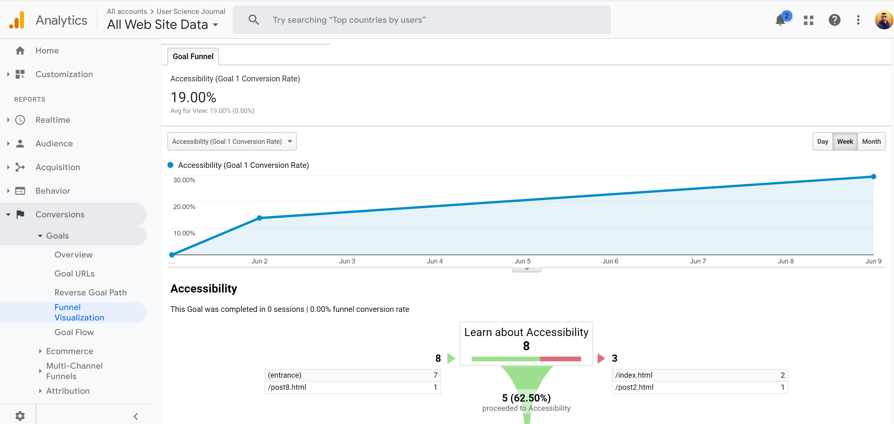

Summary Report.
My goal is to direct traffic to my Accessibility page. I choose this as my goal because this is helping me understand the power of tools like Google Analytics, Optimize and making an Accessible site. And other benefit was to educate the users and testers about Accessibility. I implemented this into my homepage by placing a link on the top left next to the links for my blogs. Next step was to add tags for GA and GO on my homepage so I can track the traffic and user behavior. After creating this experiment, I set the funnel to follow the link from my homepage to Accessibility page.

Yes, I have been able to drive users to my goal. Even though overall traffic has been limited to close friends and classmates I am still able to collect data on my experiment. When I conducted my user test, I didn’t tell them where to navigate. I simply gave them the task to research about Accessibility and since I labeled the link “Learn about Accessibility” on my homepage it was easy for them to locate it and click on it. Lack of attention-grabbing image, text size, and labeling are the reasons why users will leave the site. In my experiment the first variant I added background color and increase font size so my goal will stand out. Google optimize made it very easy to create this test and monitor results. The results were surprising I was hoping for more user traffic to interact with variant versions of my site since it had increased font size and color background. Also, the amount of users who saw variant version are half of the original version.
Experiment 1
Experiment 2
Conclusion
My next step would be to maintain this blog site and improving it. I will be following testing best practices from GA and Steve Krug. I am also going to implement grid layout with images so it’s more visually appealing.
Testing practices by Steve Krug
- If you want a great site, you've got to test.
- Testing one user is 100 precent better than testing none.
- Testing one user early in the project is better than tesing 50 near the end.